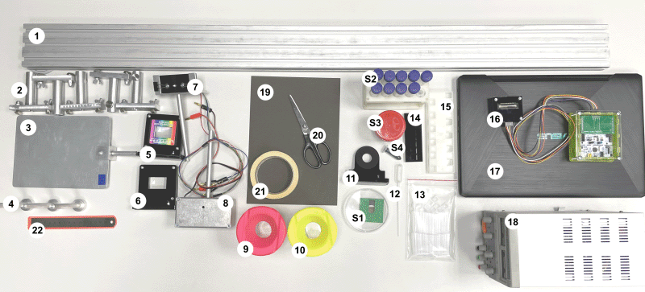
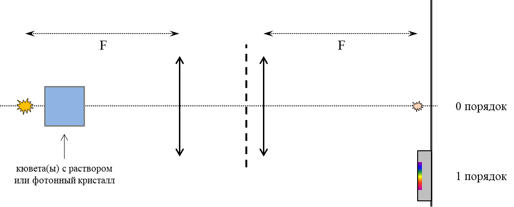
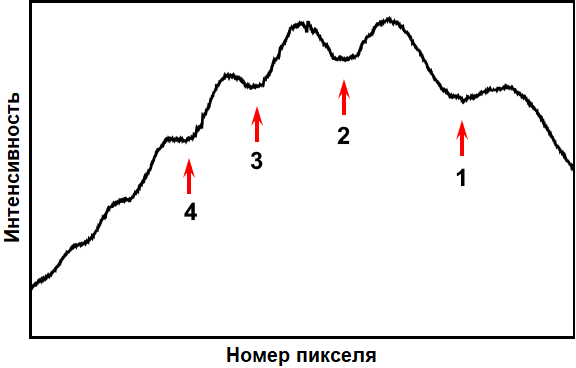
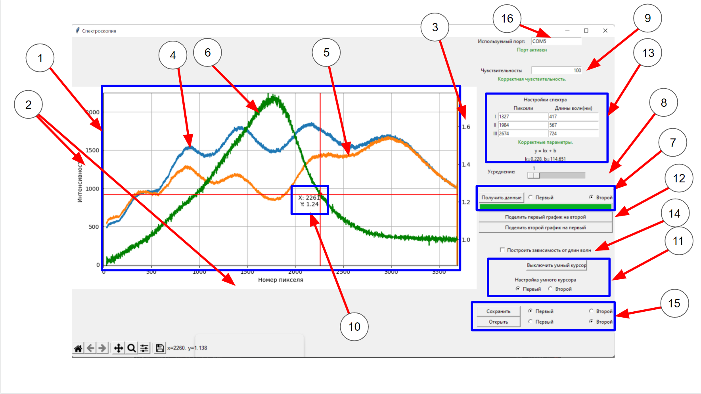
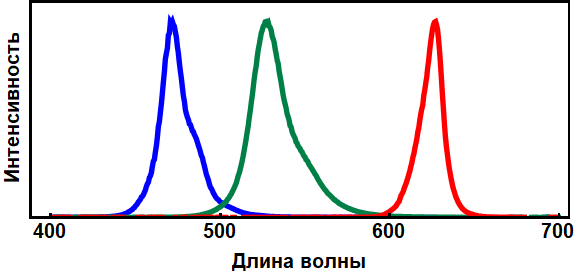
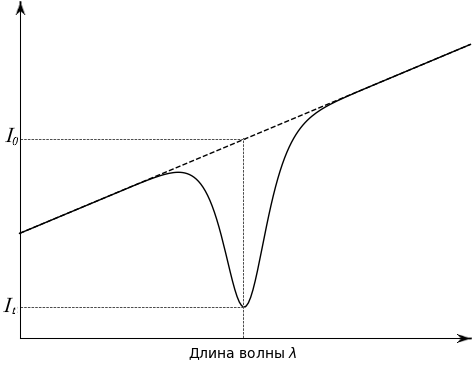
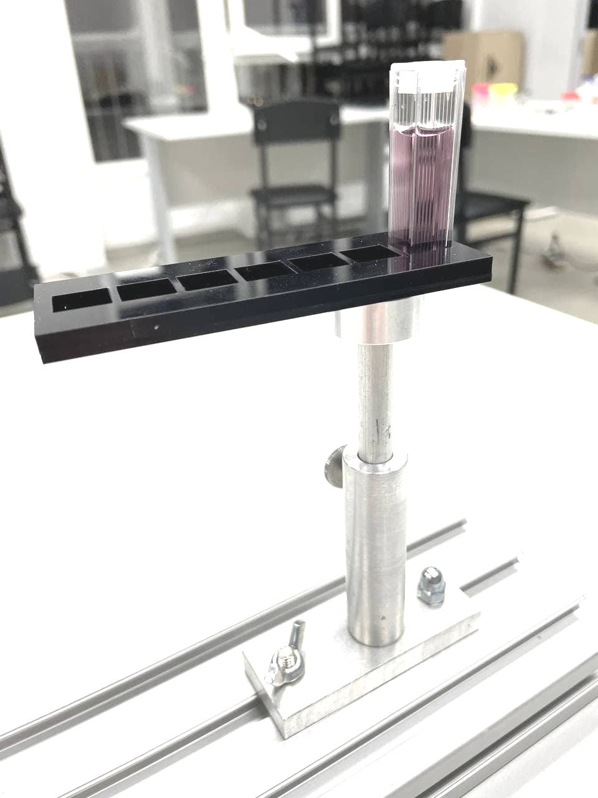

Y22 (2022) — English translation
Spectroscopic measurements are an important research method that is used in physics, chemistry, biology, medicine and at the intersection of these sciences. Spectral structure of emission, re-emission, absorption, etc. can be studied in different wavelength ranges. For example, using infrared (IR) spectroscopy, one can study the vibrational motion of molecules or their individual fragments or functional groups. Thus, we can talk about the chemical structure of a substance, and, in particular, check the results of chemical synthesis. Visible and near-infrared spectroscopy will be discussed in this problem. You will need to construct a spectrometer and use it to determine the properties of various objects.

Optical bench Movable stands Steel screen Magnetic holders (for lenses and sample holders) Lens with grating Lens without grating RGB LED (three in one housing). Do not exceed 4.5V! Incandescent lamp. Do not exceed 12V! A container for draining used solutions (you can ask to empty them) A container with clean water (for washing the pipette, cuvettes; you can ask to fill it) Magnetic photonic crystal holder Pipette Set of spectrometric cuvettes with lids (12 pcs.), cuvette volume approximately 4 ml Magnetic holder for spectrometric cuvettes Tripod for spectrometric cuvettes (place filled cuvettes in it) Spectroscopic sensor Laptop Power supply Cardboard for making diaphragms Scissors Masking tape (for marks, attaching homemade objects to the installation) Ruler Samples to be tested: S1. Photonic crystal in a Petri dish S2. In 15 ml test tubes: a solution of aniline orange, copper sulfate, solutions with different pH values. In a 2 ml test tube - a solution of thymol blue. S3. A diluted solution of brilliant green. S4. Concentrated solution of brilliant green. Wrapped in film. DO NOT open! Equipment for your convenience: Napkins Table lamp Box for covering the installation if your measurements are disturbed by the light of neighbors
Samples studied:
Equipment for your convenience:
The spectrometer will consist of an incandescent lamp (providing a continuous spectrum of radiation), a pair of lenses, a diffraction grating and a one-dimensional array of photodiodes, the data from which is collected into a computer. Attention! When assembling and adjusting the installation, make sure that there are no vertical or horizontal lens shifts: both lenses, the light source and its image (0th maximum) must be on the same axis. Assemble the installation (follow the diagram in Fig. 2): on the voltage source (18), unscrew the current and voltage adjustment knobs to 0; install the incandescent lamp (8) in the tripod (2), apply voltage $12~В$ to the lamp (this is important! the emission spectrum depends on the temperature of the filament = voltage); position the lens without a diffraction grating (6) so that the lamp is in the focus of the lens (the optical power of each lens is +6 diopters); make sure there is a parallel beam of light behind the lens; place one additional stand (2) between the lamp and the lens (it will be used as a sample holder); place the second lens with a diffraction grating (5) at a short distance from the first lens, the diffraction grating should face the first lens; the lines of the diffraction grating must be located vertically; place the screen (3) at the focus of the second lens.
The spectrometer will consist of an incandescent lamp (providing a continuous spectrum of radiation), a pair of lenses, a diffraction grating and a one-dimensional array of photodiodes, the data from which is collected into a computer.
Attention! When assembling and adjusting the installation, make sure that there are no vertical or horizontal lens shifts: both lenses, the light source and its image (0th maximum) must be on the same axis.
Assemble the installation (refer to the diagram in Fig. 2):

On the screen at zero maximum you should observe an image of the lamp filament. At the first maximum you should observe the decomposition of the lamp radiation into a spectrum. The vertical size of the spectrum should not be more than 3-4 mm. If the spectrum is not thin, check the installation assembly. Attach the sensor (16) to the screen. The sensor is attached to the screen with magnets. Place the sensitive elements of the sensor (in the middle of the chip) so that all the radiation decomposed into a spectrum (first order) falls on them. The sensor is attached to the screen so that the wires face down. With this configuration, make the red light fall on the right side of the sensor. Because The sensor is quite thick, change the position of the screen slightly so that the sensor (and not the plane of the screen) is in focus of the second lens. In the program running on the computer (17), click the “Get data” button. You should get a graph similar to the one shown below.


Данная программа позволяет считывать интенсивность света, падающего на чувствительные элементы датчика (CCD матрицу), а также производить с полученными данными определённые действия. - Основные элементы программы : график интенсивности, основные оси, вспомогательная ось для графика отношения, первый график, второй график, график отношения, виджет построения графика, полоса для усреднения, чувствительность датчика, «умный» курсор, виджет для настройки «умного» курсора, кнопки для построения графика отношения первого и второго графиков, блок настройки режима отображения длин волн, кнопка включения/выключения режима отображения длин волн, блок сохранения и загрузки, поле для определения используемого порта - Алгоритм действий для начала работы с программой : подключите устройство для считывания к компьютеру через кабель. Выберите на панеле «Используемый порт» (16) – COM3. Снизу под ней должна загореться зелёная надпись «Порт активен». Если этого не произошло, позовите наблюдателя и сообщите о проблеме. - Считывание данных : Для считывания новых данных вам необходимо нажать на кнопку «Получить данные», которая находится в виджете получения данных (7). Существует два слота для хранения данных: первый и второй. В (7) вы можете выбрать в какой именно помещать новые измерения, при этом старые данные, которые хранились в этом слоте безвозвратно исчезнут (если вы их перед этим не сохранили, подробнее об этом в разделе ниже). У вас есть возможность выбрать степень усреднения (8). Число, которое вы выбираете в этом виджете показывает сколько будет сделано измерений перед их усреднением. Усреднение позволяет избежать появление артефактов, а также шумов. Для того, что бы считывать сигналы разной интенсивности вы можете изменять чувствительность (9). При этом вводимое число должно быть делителем числа 50000. - Работа с графиком, График отношения, «Умный» курсор : На координатной сетке (1) одновременно могут отображаться от 0 до 3 графиков (4, 5, 6). 2 графика из слотов для данных (4, 5) и третий (6) – график отношения, являющийся функцией от первых двух: каждая точка этого графика получается делением значения из первого набора данных на второй или наоборот. Так как характерные значения графика отношения на несколько порядков расходятся с основными, добавлена дополнительная ось ординат (3). Построить такой график вы можете с помощью кнопок «Поделить первый график на второй» и «Поделить второй график на первый» (12). При снятии новых данных график отношения пропадает. Для вашего удобства в данную программу был добавлен «умный» курсор (10). Этот курсор «ползет» по выбранному графику и отображает координаты текущей точки. Настройка «умного» курсора производится в виджете (11). Там вы можете включить/выключить курсор с помощью одноименной кнопки, а так же выбрать, с первым или вторым графиком будет работать «умный» курсор. При активном графике отношения курсор автоматически наводится на него. - Режим отображения длин волн : в основном режиме по оси X будут отображаться номера пикселей матрицы. Однако с помощью кнопки «Построить зависимость от длин волн» (14) вы можете перестроить ваши данные с учётом откалиброванных длин волн. Для перестройки оси X вам необходимо ввести 3 пары «номер пикселя - длина волны» в соответствующий виджет (13). Построение происходит с помощью метода наименьших квадратов. Если вам нужно перестроить график только по двум опорным длинам волн, то вы можете вместо третьей точки указать значения одной из первых двух или любую их линейную комбинацию. Данные полученной калибровочной зависимости отображаются внизу виджета. - Сохранение и загрузка данных : Для того, что бы сохранить и загрузить, ранее сохранённые данные, вам необходимо использовать виджет (15). При этом с помощью кнопок «Первый» и «Второй» можно выбрать в какой слот вы будете загружать данные или в какой – сохранять. Сохранение происходит в файл с разрешением .dat. Сохранить график отношения нельзя. - Артефакты : иногда на графиках можно увидеть вертикальные полосы. Так бывает когда ваш сигнал очень низкий. Это можно починить, увеличив чувствительность (9) и включив усреднение (8).
- Основные элементы программы : график интенсивности, основные оси, вспомогательная ось для графика отношения, первый график, второй график, график отношения, виджет построения графика, полоса для усреднения, чувствительность датчика, «умный» курсор, виджет для настройки «умного» курсора, кнопки для построения графика отношения первого и второго графиков, блок настройки режима отображения длин волн, кнопка включения/выключения режима отображения длин волн, блок сохранения и загрузки, поле для определения используемого порта
- Алгоритм действий для начала работы с программой : подключите устройство для считывания к компьютеру через кабель. Выберите на панеле «Используемый порт» (16) – COM3. Снизу под ней должна загореться зелёная надпись «Порт активен». Если этого не произошло, позовите наблюдателя и сообщите о проблеме.
- Считывание данных : Для считывания новых данных вам необходимо нажать на кнопку «Получить данные», которая находится в виджете получения данных (7). Существует два слота для хранения данных: первый и второй. В (7) вы можете выбрать в какой именно помещать новые измерения, при этом старые данные, которые хранились в этом слоте безвозвратно исчезнут (если вы их перед этим не сохранили, подробнее об этом в разделе ниже). У вас есть возможность выбрать степень усреднения (8). Число, которое вы выбираете в этом виджете показывает сколько будет сделано измерений перед их усреднением. Усреднение позволяет избежать появление артефактов, а также шумов. Для того, что бы считывать сигналы разной интенсивности вы можете изменять чувствительность (9). При этом вводимое число должно быть делителем числа 50000.
- Работа с графиком, График отношения, «Умный» курсор : На координатной сетке (1) одновременно могут отображаться от 0 до 3 графиков (4, 5, 6). 2 графика из слотов для данных (4, 5) и третий (6) – график отношения, являющийся функцией от первых двух: каждая точка этого графика получается делением значения из первого набора данных на второй или наоборот. Так как характерные значения графика отношения на несколько порядков расходятся с основными, добавлена дополнительная ось ординат (3). Построить такой график вы можете с помощью кнопок «Поделить первый график на второй» и «Поделить второй график на первый» (12). При снятии новых данных график отношения пропадает. Для вашего удобства в данную программу был добавлен «умный» курсор (10). Этот курсор «ползет» по выбранному графику и отображает координаты текущей точки. Настройка «умного» курсора производится в виджете (11). Там вы можете включить/выключить курсор с помощью одноименной кнопки, а так же выбрать, с первым или вторым графиком будет работать «умный» курсор. При активном графике отношения курсор автоматически наводится на него.
- Режим отображения длин волн : в основном режиме по оси X будут отображаться номера пикселей матрицы. Однако с помощью кнопки «Построить зависимость от длин волн» (14) вы можете перестроить ваши данные с учётом откалиброванных длин волн. Для перестройки оси X вам необходимо ввести 3 пары «номер пикселя - длина волны» в соответствующий виджет (13). Построение происходит с помощью метода наименьших квадратов. Если вам нужно перестроить график только по двум опорным длинам волн, то вы можете вместо третьей точки указать значения одной из первых двух или любую их линейную комбинацию. Данные полученной калибровочной зависимости отображаются внизу виджета.
- Сохранение и загрузка данных : Для того, что бы сохранить и загрузить, ранее сохранённые данные, вам необходимо использовать виджет (15). При этом с помощью кнопок «Первый» и «Второй» можно выбрать в какой слот вы будете загружать данные или в какой – сохранять. Сохранение происходит в файл с разрешением .dat. Сохранить график отношения нельзя.
- Артефакты : иногда на графиках можно увидеть вертикальные полосы. Так бывает когда ваш сигнал очень низкий. Это можно починить, увеличив чувствительность (9) и включив усреднение (8).
Для того, чтобы в дальнейшем можно было работать с количественными величинами длин волн, собранный спектрометр необходимо откалибровать. Т.е. каждому пикселю датчика нужно поставить в соответствие длину волны. В этой задаче известными, опорными значениями будут являться длины волн, на которых интенсивность излучения светодиодов максимальна.
Общий смысл процедуры калибровки следующий: установить лампу и датчик в рабочее положение, заменить лампу на светодиод и зафиксировать, где находится первый дифракционный порядок излучения светодиода. Таким образом, некоторому пикселю можно будет поставить в соответствие определенную длину волны. Порядок действий при калибровке: установите и включите лампу (8), расположите датчик в первый дифракционный порядок; на экране (3) также должен быть виден нулевой максимум; наклейте малярный скотч (21) на нулевой максимум и отметьте его положение, это будет важно для дальнейшей процедуры калибровки; отключите и снимите лампу, установите вместо нее держатель со светодиодом (7) (светодиод относительно стойки расположен так же как и нить накаливания лампы); на источнике напряжения (18) выкрутите ручки регулировки тока и напряжения в 0; подключите светодиод (7) к блоку питания: красный штекер в «$+$», любой из черных – в «$-$» (в одном корпусе светодиода расположены три излучающих элемента); подайте на светодиод напряжение 3-4 В, он должен загореться (не превышайте напряжение на светодиоде в 4.5 В, сгоревшие светодиоды не заменяются); отрегулируйте положение светодиода по высоте и по углу поворота так, чтобы нулевой максимум совпал с отметкой на малярном скотче, соответствующей нулевому максимуму от лампы; на датчике (16) должно быть видно пятно первого дифракционного порядка; в программе, запущенной на компьютере (17), нажмите кнопку «Получить данные»; вы должны увидеть спектр излучения светодиода, похожий на тот, что приведен на рис. 5; если сигнал слишком слабый, увеличьте напряжение на светодиоде (не превышая 4.5 В) или увеличьте чувствительность в программе; если сигнал слишком сильный (зашкаливает), уменьшите напряжение на светодиоде или уменьшите чувствительность в программе; определите положение максимума (в пикселях) и запишите это число, рядом укажите длину волны соответствующего светодиода (рис. 5); не меняя положения оборудования, переключите светодиод на другой цвет (замените черный штекер на другой), определите положение максимума; излучение разных цветов в светодиоде генерируется немного в разных по высоте местах, и первый дифракционный порядок может немного смещаться, это нормально, можно не смещать датчик, если хотя бы часть каждого цветного пятна попадает на него; повторите процедуру для третьего светодиода; в соответствующих полях в программе можно ввести пары «номер пикселя-длина волны», и график автоматически будет перестроен в координатах «интенсивность (длина волны)»; можно вернуть на место лампу, проверив ее установку по нулевому максимуму.
Общий смысл процедуры калибровки следующий: установить лампу и датчик в рабочее положение, заменить лампу на светодиод и зафиксировать, где находится первый дифракционный порядок излучения светодиода. Таким образом, некоторому пикселю можно будет поставить в соответствие определенную длину волны.
Порядок действий при калибровке:
Спектры светодиодов в соответствии с технической документацией. Максимумы излучения: синего --- $\lambda_B = 470~нм$, зеленого --- $\lambda_G = 528~нм$, красного --- $\lambda_R = 627~нм$.

If the positions of key installation parameters (lamp, lenses, screen, sensor) change, the spectrometer, of course, needs to be recalibrated.
Important! In all further work, the samples under study should be placed directly behind the lamp (the gap between the lamp body and the sample is 5-7 mm). It is important that all the light from the lamp that subsequently hits the diffraction grating goes through the sample. Otherwise, the spectrum on the sensor will be a superposition of the spectrum of the object under study and the spectrum of the lamp itself. To further limit the path of unnecessary rays, you can make diaphragms. You are only allowed to attach your own diaphragms to lens bodies. They cannot be attached to cuvettes, sample holders, photonic crystal, etc.
In further parts of the problem, the absorption of various objects/solutions/substances at different parameters will be studied. For these objects, the concept of transmittance $t$ can be introduced. It is a function of the wavelength $\lambda$. The analysis of the function $t(\lambda)$ is the basis for the study of the properties and structure of substances. If radiation with wavelength $\lambda$ and intensity $I_0$ is incident on a certain sample, and the intensity of transmitted radiation at the same wavelength is $I_t$ (Fig. 6), then the transmittance coefficient $t$: $$t(\lambda)=\cfrac{I_t}{I_0}.$$ Технически для нахождения коэффициента пропускания $t(\lambda)$ вам необходимо в программе в «первый» график снять спектр исходного излучения $I_0(\lambda)$, затем на пути света расположить образец и во «второй» график снять спектр прошедшего излучения $I_t(\lambda)$. Для вашего удобства в программе сделаны кнопки «Поделить первый график на второй» и наоборот. При хорошо снятых данных вы напрямую рассчитаете и сможете поточечно снять зависимость коэффициента пропускания от номера пикселя (или длины волны, если проведена калибровка). Кнопки деления работают исключительно формально, т.е. делят попиксельно интенсивности и показывают результат (исключая только слишком большие, зашкаливающие значения). Учитывайте это, если ваши данные «шумные» или имеют значительный фон. В таких случаях рекомендуется обработать данные вручную. Конечно, коэффициент пропускания $t$ зависит от ряда параметров: концентрации вещества $n$, толщины слоя вещества $b⟦ M14⟧\varepsilon(\lambda)$ (закон Бугера-Ламберта-Бера): $$t=\exp{(-n\varepsilon b)}.$$ Помните, что спектр лампы – не плоский. Помните, что кювета тоже имеет оптические свойства. Поэтому, если вас интересует только поглощение раствора/вещества, то исходным сигналом должен быть свет, прошедший через пустую кювету (или кюветы).
В дальнейших частях задачи будет исследоваться поглощение различных объектов/растворов/веществ при разных параметрах. Для этих объектов можно ввести понятие коэффициента пропускания $t$. Он является функцией длины волны $\lambda$. На анализе функции $t(\lambda)⟦M20 ⟧\lambda$ и интенсивностью $I_0$, а интенсивность прошедшего излучения на той же длине волны равна $I_t$ (рис. 6.), то коэффициент пропускания $t$: $$t(\lambda)=\cfrac{I_t}{I_0}.$$ Технически для нахождения коэффициента пропускания $t(\lambda)$ вам необходимо в программе в «первый» график снять спектр исходного излучения $I_0(\lambda )$, затем на пути света расположить образец и во «второй» график снять спектр прошедшего излучения $I_t(\lambda)$. Для вашего удобства в программе сделаны кнопки «Поделить первый график на второй» и наоборот. При хорошо снятых данных вы напрямую рассчитаете и сможете поточечно снять зависимость коэффициента пропускания от номера пикселя (или длины волны, если проведена калибровка). Кнопки деления работают исключительно формально, т.е. делят попиксельно интенсивности и показывают результат (исключая только слишком большие, зашкаливающие значения). Учитывайте это, если ваши данные «шумные» или имеют значительный фон. В таких случаях рекомендуется обработать данные вручную. Конечно, коэффициент пропускания $t$ зависит от ряда параметров: концентрации вещества $n$, толщины слоя вещества $b$, через который прошел свет, и некоторой характеристической величины – коэффициента экстинкции $\varepsilon(\lambda)$ (закон Бугера-Ламберта-Бера): $$t=\exp{(-n\varepsilon b)}.$$ Remember that the spectrum of a lamp is not flat. Remember that the cuvette also has optical properties. Therefore, if you are only interested in the absorption of a solution/substance, then the initial signal should be the light passing through an empty cuvette (or cuvettes).

In this part of the task we will examine the photonic crystal given to you. A photonic crystal is a structure in which the refractive index of a material changes periodically on scales on the order of the wavelength of light. Because of this structure, photonic crystals at certain wavelengths practically stop transmitting light and only reflect it. It is known from wave optics that if the structure of such a crystal in the direction of incidence of light (angle of incidence $\theta = 0$) has a spatial period $D$, then a noticeable change in transmission can be observed only at wavelengths $\lambda$, determined by the equality:\[2Dn=m\lambda\] - the so-called Bragg-Snell law, where $m$ is the natural number, and $n$ is the refractive index of the material (dispersion can be neglected).
The photonic crystal given to you is manufactured in such a way that it has 4 deep transmission minima in the visible range. (Kirill S. Napolskii, Alexey A. Noyan, Sergey E. Kushnir. Control of high-order photonic band gaps in one-dimensional anodic aluminum photonic crystals // Optical Materials 109 (2020) 110317)
It follows from the Bragg-Snell law that intensity minima should also exist at larger values of $m$.
Similarly, transmission minima should also be observed at lower $m$. It turns out that a total of 7 transmission minima can be detected in the region of wavelengths emitted by the lamp.
When studying various samples, the need arises to create narrow-spectrum radiation. Wavelength tunable lasers are very expensive, and when there is no need for monochromatic and coherent radiation, a combination of filters can be used. Filters will highlight a narrow range from a continuous spectrum. In this part of the problem, two substances (solutions of aniline orange and copper sulfate) will act as a short-wave and long-wave filter. And their mixture is stripe.
For this part of the work you will need solutions of aniline orange and copper sulfate (S2). They will need to be poured into cuvettes (13) using a pipette (12). If you need to pipette another solution, rinse it with water before doing so (10). Cover the cuvettes with lids to prevent liquid from spilling. For spectroscopic examination of solutions, insert the cuvette(s) into the holder (14) and attach to the magnetic holder (4) in the rack (2) (Fig. 7). If there is little solution in the cuvette or the source light affects the measurements, consider creating limiting diaphragms from cardboard (19). The cuvettes can also be washed. Drain dirty water into container (9). Similar steps must be performed in parts D and E.
For this part of the work you will need solutions of aniline orange and copper sulfate (S2). They will need to be poured into cuvettes (13) using a pipette (12). If you need to pipette another solution, rinse it with water before doing so (10). Cover the cuvettes with lids to prevent liquid from spilling. For spectroscopic examination of solutions, insert the cuvette(s) into the holder (14) and attach to the magnetic holder (4) in the rack (2) (Fig. 7). If there is little solution in the cuvette or the source light affects the measurements, consider creating limiting diaphragms from cardboard (19). The cuvettes can also be washed. Drain dirty water into container (9). Similar steps must be performed in parts D and E.

Read carefully again how to handle solutions and cuvettes at the beginning of Part C.
The pH value (pH, minus the logarithm of the proton concentration in solution) is the most important parameter of various chemical and biological fluids. To determine it, special indicator substances are used, the transmission spectrum of which is sensitive to the concentration of protons. One such indicator is thymol blue.
In this part of the problem, it is necessary to remove the dependence of transmission spectra on the pH of solutions. Fill a cuvette with 3 ml of a solution with a certain pH value (see equipment S2). Using a pipette, add two (2) drops of thymol blue (S2) to the cuvette. Pour excess thymol back into the test tube or waste container. Rinse the pipette with water (10). Immerse the pipette in the cuvette with a mixture of solution and thymol. Pipette the liquid in and out and stir the solution. The solution is ready for spectroscopic measurements. When moving to another solution, try to take the same amount and drop the same drops of thymol in the same volume, i.e. try to maintain a constant concentration of thymol. Otherwise, some normalization will be required (if necessary, this can be done based on data in the IR range). Read carefully again how to handle solutions and cuvettes at the beginning of Part C.
Source: https://pho.rs/p/2847